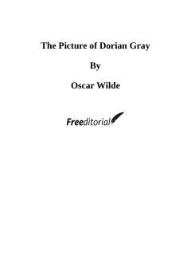

TPAbadiy go'zallik va inson ruhiyatining tanazzuli haqidagi afsonaviy roman.
Ushbu asar yosh va go'zal Dorian Greyning o'z portreti qarishi evaziga abadiy yosh qolishi va uning botiniy buzilishlari haqida hikoya qiladi. Oscar Wilde inson tabiati, san'at va axloq o'rtasidagi munosabatlarni mahorat bilan ochib beradi. Roman g'ayritabiiy syujeti va chuqur felsefiy g'oyalari bilan jahon adabiyotining durdonalaridan biriga aylangan.